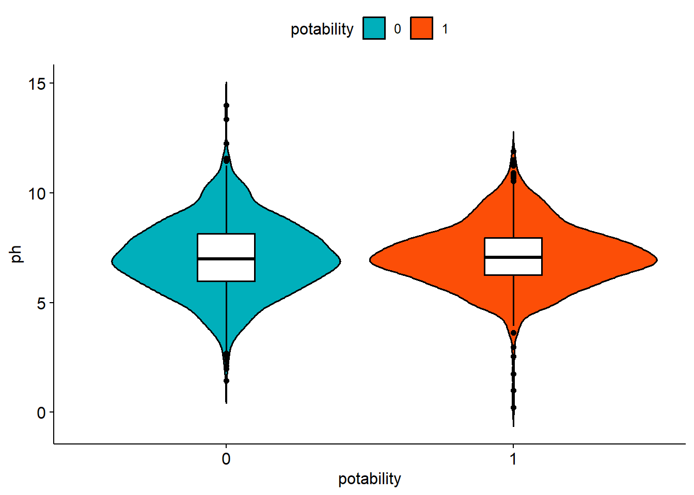
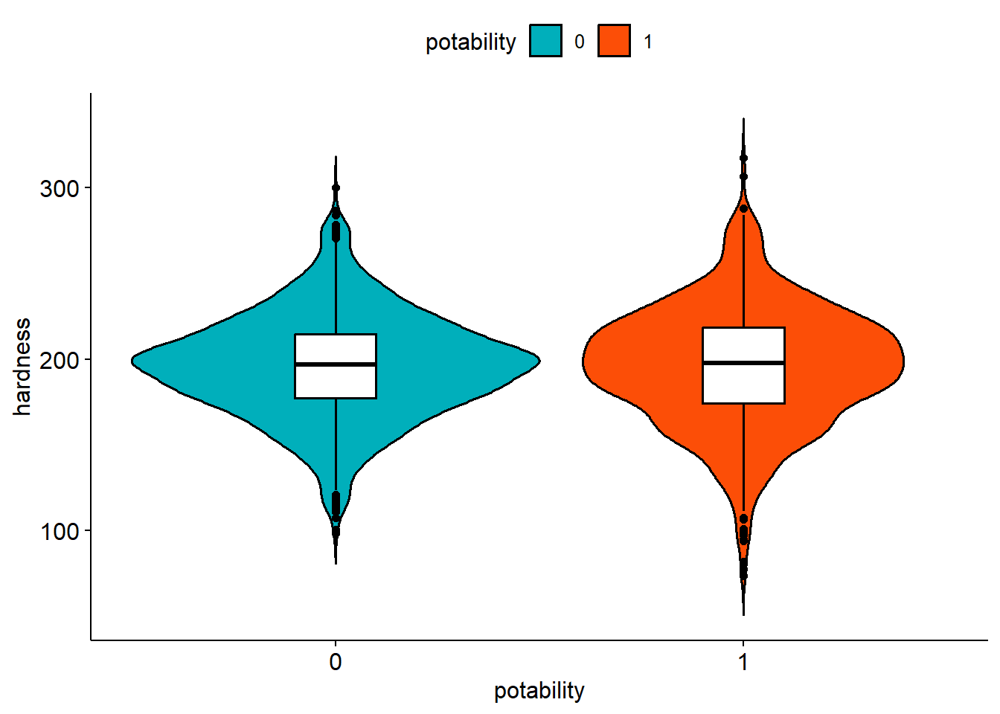
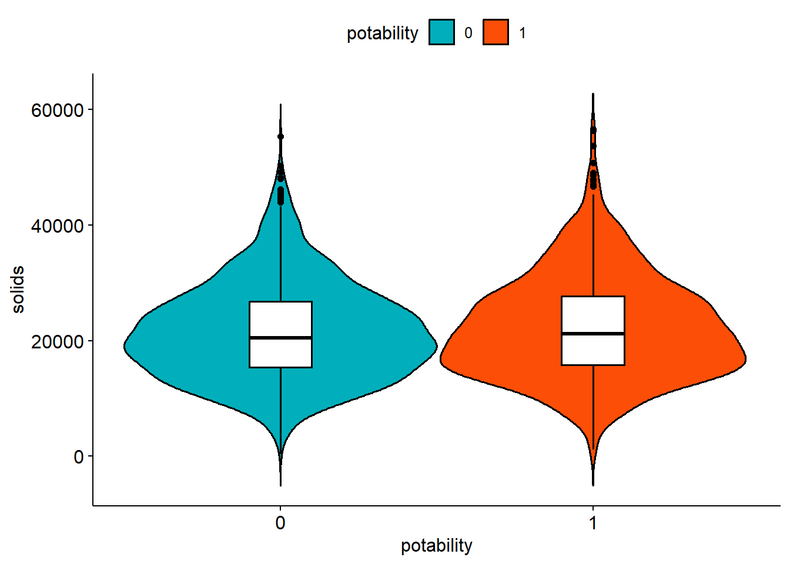
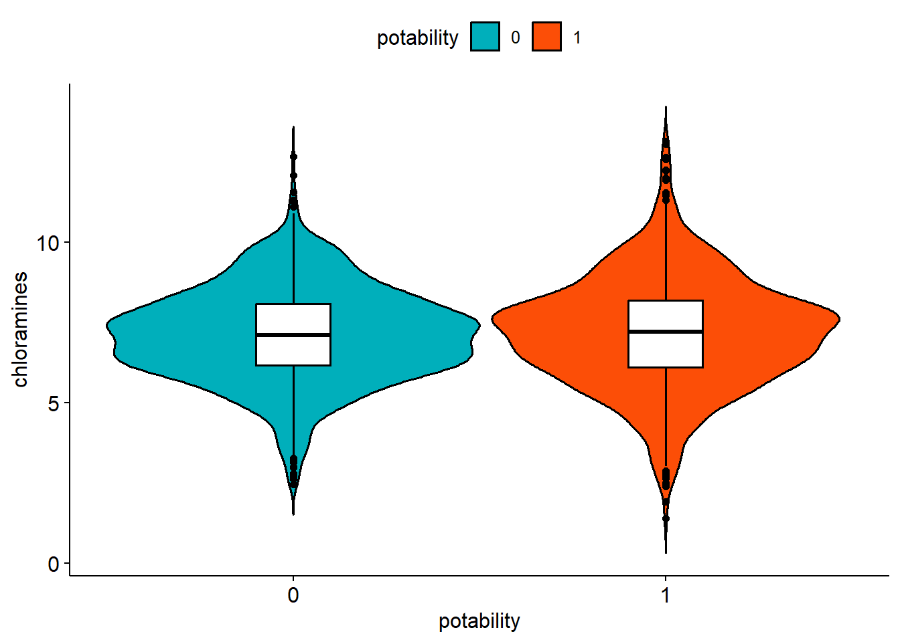
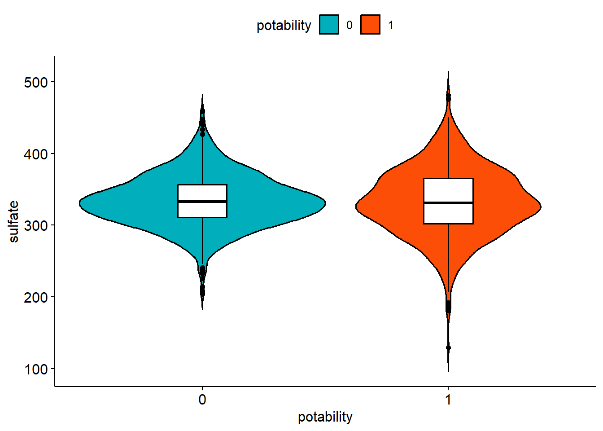
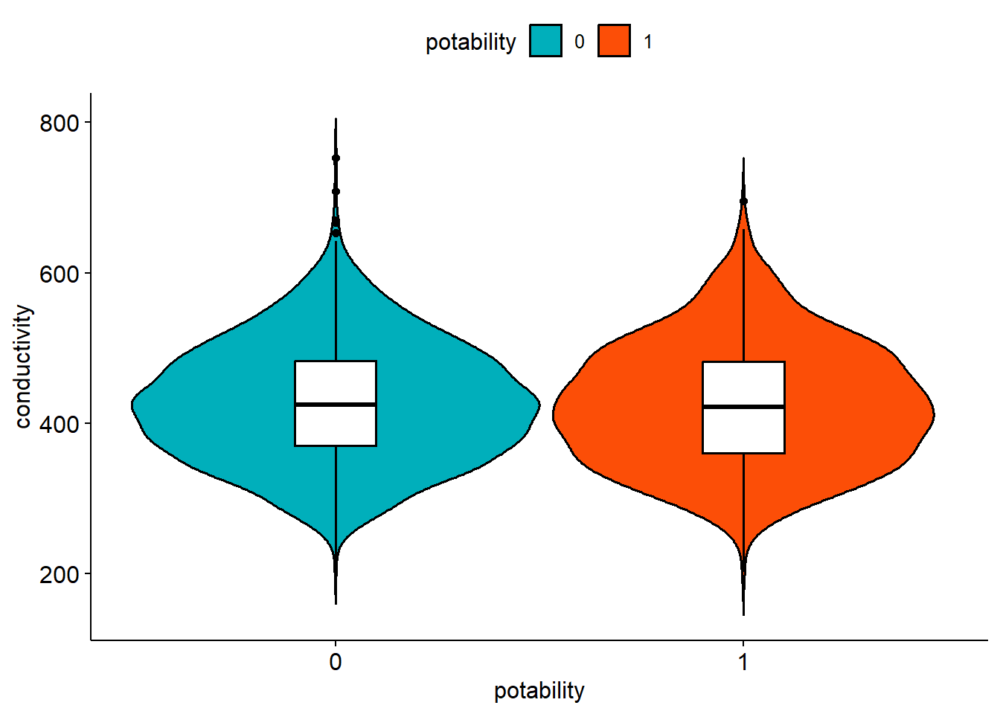
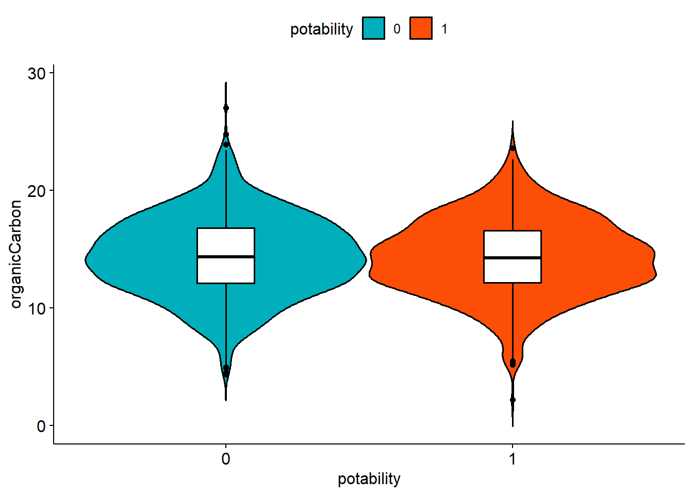
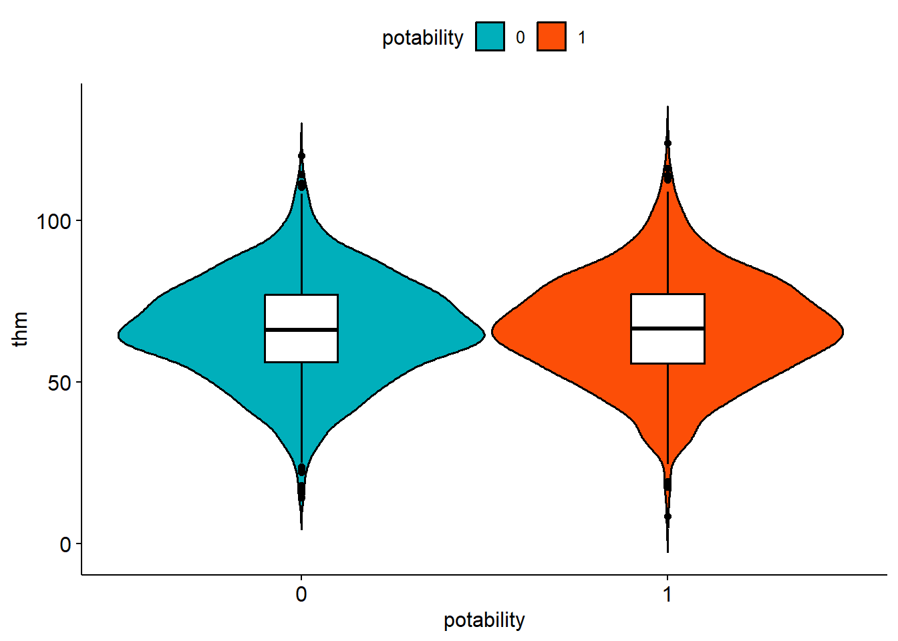
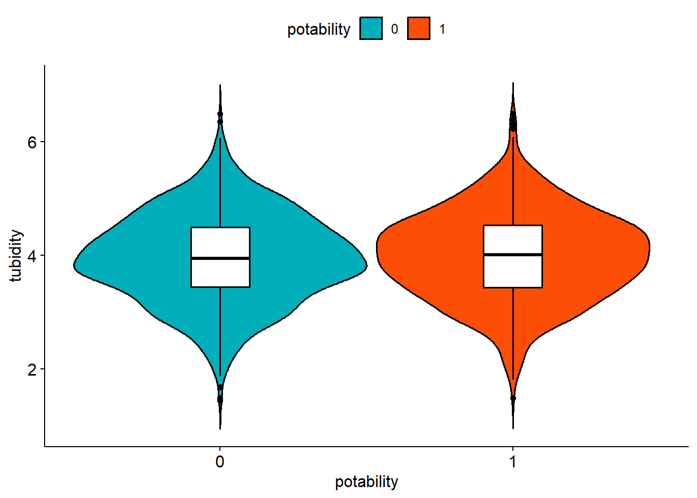
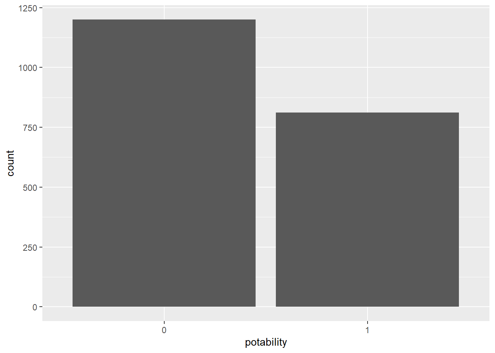

Stated as an obvious fact, water is critical to survival for humans. Access to clean drinking water is an enabler to having a healthy life, and without access to water, life becomes much harder.
In recent years, we have seen phenomena, both natural and man-made, impact the availability to clean drinking water. Causes like droughts, fracking, and even AI data centers have impacted both the quality and availability of clean drinking water. In situations where the supply of clean water is limited or the quality of drinking water is in question, it is critically important to be able to quickly determine if a source of water is drinkable.
“Water Potability” is an indicator that determines if water is safe to drink. Potability is measured by a series of tests, such as bacteria samples, chemical composition tests, and physical measurements. If the measurements are below a certain threshold (usually set by a regulatory authority), the water is considered potable.
However, not everyone has the access to the equipment or procedures required to run through a water potability test. Similarly, regulatory authorities cannot conduct potability tests everywhere and all the time. This report will detail an alternative, where predictive modeling is used to predict water potability.
The goal of this report is to train a classification model that can classify water potability with a high degree of certainty. A Kaggle dataset with observations consistenting of many measurements taken on a sample of water and the water’s potability will be used to train and evaluate the model
The following variables will be used in the model development in this report:
pH: A measure of acidify. pH is measured on a scale from 0 (extremely acidic) to 14 (extremely basic), with 7 being a neutral pH
Hardness: A measure of the quantity of minerals dissolved within water, normally measured in milligrams per liter
Total Dissolved Solids (TDS): TDS is a measure of the total amount of material that is dissolved in water, measured in parts per million (ppm)
Chloramines: Chloramines are found in water when chlorine and ammonia are used to disinfect water. Chloramines are measures in parts per million
Sulfate: Sulfates are naturally occuring in all waters. We look to find sulfate levels (ppm) that match that of fresh water
Conductivity: Conductivity, measured in microsiemens per centimeter, measures a substance’s ability to conduct an electric current. Low levels of conductivity indicate that there are a small amount of ions (dissolved salts) in solution, which can be used to predict water purity
Total Organic Carton (TOC): TOC is a measure of the amount of organic carbon compound in water. TOC is another indicator of water purity
Trihalomethanes (THMs): THMs (measured in ppm) are chemicals that are found when water is treated with chlorine.
Turbidyity: Turbidity (measured with the Nephelometric Turbidity Unit (NTU)), describes the quantity of suspended particles within a solution. Clean water tends to have a smaller turbidity than contaminated water.
Potability: Potability (True, Potable or False, Not Potable) is a binary indicator of the water’s ability to be consumed safely.
Exploratory Data Analysis (EDA):
The following section will overview the exploratory data analysis performed to understand the provided data set and prepare for modeling:
print(paste0("Number of Oberservations Thrown Out: ", length(missingInRow)*propMissingRow))
[1] "Number of Oberservations Thrown Out: 1265"
pH and sulfate are missing in 14% and 23% of water samples, respectively, while 39% of entries in the data set contain at least one missing row. In an attempt to not throw out data, we can either drop the pH and sulfate columns, impute all missing values with the column mean, or drop any rows with any missing data. In the context of this problem, any gained accuracy in the model that could be attributed to imputed values in the training set could be the difference between classifying a water sample between potable and non-potable. For this reason, I will chose to throw out any observations with missing data. This will allow us to use all predictors in modeling, while also not having to impute any data.
Clean Data Set to Remove Rows with Missing Values
## Convert to a tibble for better printing and manipulation laterpotabilityDf =as_tibble(drop_na(potabilityDf))print(potabilityDf)
Next, we will generate summary statistics for each numeric variable. I since we are trying to determine what variables might indicate water potability, I will group by the potability response variable
I will create a side by side violin / box plot for each numeric variable at each level of the response.
numericVars =names(potabilityDf |>select(where(is.numeric)))#ggviolin(potabilityDf, x = "potability", y = "ph", fill = "potability",#palette = c("#00AFBB" , "#FC4E07"),#add = "boxplot", add.params = list(fill = "white"))for (var in1:length(numericVars)){print(ggviolin(potabilityDf, x ="potability", y = numericVars[var], fill ="potability",palette =c("#00AFBB" , "#FC4E07"),add ="boxplot", add.params =list(fill ="white")))}









Observations:
Means for each numeric variable at each level of potability seem consistent
I noticed a few “happy medium” variables, where potable water is found within a tight range of the numeric variable, these variable were “pH” and “sulfate”
Correlation Plot:
Next, we will generate a correlation plot. We are looking for uncorrelated variables, which will ensure we don’t have multidisciplinary, which will negatively impact our ability to estimate model parameters and variabce
There is very little correlation between any of the numeric variables, we should be good to go.
Potable vs Non-Potable:
We should look at the distribution of the response variable to determine if we should make any decisions about splitting the data:
g =ggplot(data = potabilityDf, aes(x = potability))g +geom_bar()

The water samples have a somewhat even spread across both levels of potability. We will not need to make any special considerations when doing our train / test split to make sure a certain class makes it into each set.
No Information Rate (NIR)
No Information Rate, which is just the proportion of the most prevalent response class, is the baseline that we will judge our models against for accuracy. We will look to use the predictor variables to significantly improve on prediction accuracy compared to the NIR.
paste0("No Information Rate: ", 1-sum(ifelse(potabilityDf$potability =="0", 0, 1))/length(potabilityDf$potability))
[1] "No Information Rate: 0.596718050721034"
We should look to do a lot better than the NIR of 60%